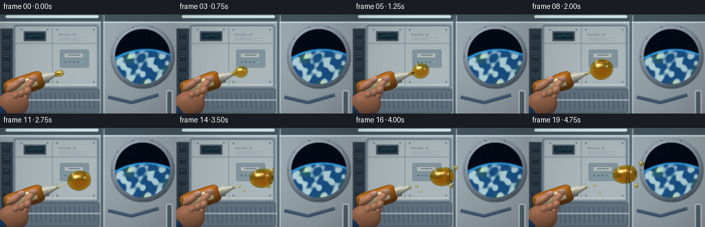
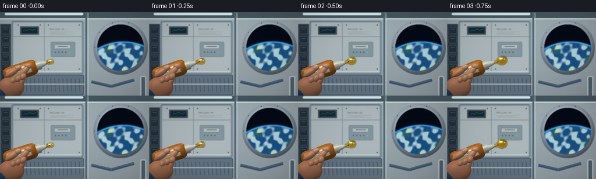

CODING AGENTS AS PIXEL WORLD MODELS
traex/GPT-6.1-Sol · phygen_004
点击播放 · 原生 RGB 像素
逐轮保存的候选
回放视频、检查图与代码变化。
每份候选均可单独播放。实际图片检查记录在下方工具轨迹中。
候选 01播放与检查图
点击播放 · 原生 RGB 像素


展开代码变化
--- 上一保存版本
+++ 本次保存版本
@@ -0,0 +1,357 @@
+"""Procedural, mesh-free RGB rendering of honey released in microgravity."""
+from pathlib import Path
+import json
+import numpy as np
+from PIL import Image, ImageDraw, ImageFont, ImageFilter
+import artifact_io
+
+ROOT=Path(__file__).parent
+SPEC=json.loads((ROOT/'task_spec.json').read_text())
+W,H=SPEC['width'],SPEC['height']
+SS=3
+SW,SH=W*SS,H*SS
+rng=np.random.default_rng(2039)
+Y,X=np.mgrid[0:SH,0:SW].astype(np.float32)
+px=X/SS; py=Y/SS
+XX=(px-W/2)/48
+YY=(H/2-py)/48
+
+
+def font(size):
+ path='/usr/share/fonts/truetype/dejavu/DejaVuSans.ttf'
+ try:return ImageFont.truetype(path,size)
+ except:return ImageFont.load_default()
+
+def background():
+ shade=np.zeros((SH,SW,3),np.float32)
+ ambient=0.88+0.09*np.cos((px-120)/120)-0.10*py/H
+ for c,v in enumerate((166,181,188)):shade[:,:,c]=v*ambient
+ shade+=rng.normal(0,.55,shade.shape)
+ im=Image.fromarray(np.clip(shade,0,255).astype('uint8'))
+ d=ImageDraw.Draw(im)
+ def line(p,fill,width=1):d.line([(int(x*SS),int(y*SS)) for x,y in p],fill=fill,width=max(1,int(width*SS)))
+ def rect(box,fill,outline=None,width=1,r=0):
+ b=tuple(int(v*SS) for v in box)
+ if r:d.rounded_rectangle(b,int(r*SS),fill,outline,width=int(width*SS))
+ else:d.rectangle(b,fill,outline,width=int(width*SS))
+ # Modular aluminum pressure-shell and recessed equipment.
+ rect((0,0,256,11),(70,87,96))
+ line([(0,11),(256,11)],(215,228,231),2)
+ rect((8,1,143,5),(216,239,242),r=2)
+ rect((20,15,143,107),(138,156,166), (94,112,125),1.5,3)
+ rect((23,18,140,104),(171,183,187),r=2)
+ line([(22,42),(140,42)],(120,137,145),1)
+ line([(76,19),(76,102)],(126,143,151),1)
+ line([(23,102),(140,102)],(210,215,214),1)
+ # Left service rack, straps and lighted computer screen.
+ rect((0,20,19,122),(45,58,70),(96,113,122),1)
+ for y in range(26,118,16):
+ rect((3,y,16,y+11),(34,47,58),(110,121,124),.5,1)
+ line([(6,y+3),(13,y+3)],(159,176,181),.6)
+ rect((34,24,67,39),(59,72,83),(107,121,126),1,1)
+ rect((37,27,64,36),(19,42,53),r=1)
+ line([(40,33),(43,30),(46,32),(50,29),(56,31),(62,29)],(91,200,215),.6)
+ for x in (31,69,83,136):
+ for y in (22,98):
+ d.ellipse(((x-1)*SS,(y-1)*SS,(x+1)*SS,(y+1)*SS),fill=(77,91,101))
+ line([(x-.6,y),(x+.6,y)],(160,170,175),.3)
+ d.text((85*SS,27*SS),'PAYLOAD 04',font=font(4*SS),fill=(93,110,117))
+ for y in (34,36,38):line([(86,y),(126 if y!=36 else 114,y)],(123,139,145),.6)
+ rect((87,51,129,77),(129,148,158),(110,128,137),.8,2)
+ rect((93,56,121,63),(178,187,187),(109,126,133),.7,1)
+ line([(99,59),(116,59)],(74,90,101),1)
+ for x in (94,100,106,112,118):
+ d.ellipse((x*SS,68*SS,(x+2)*SS,70*SS),fill=(67,100,113) if x!=118 else (105,191,166))
+ rect((21,108,144,143),(98,114,128),(57,76,92),1,2)
+ for x in range(31,137,7):line([(x,114),(x+1,137)],(66,82,97),1)
+ line([(0,124),(148,124)],(169,181,188),2)
+ line([(148,0),(148,144)],(78,100,114),3)
+ line([(151,1),(151,144)],(209,218,219),1.2)
+ # Recessed observation porthole, actual orbital Earth visible beyond.
+ cx,cy,rad=207,61,40
+ dx=px-cx; dy=py-cy; rr=np.hypot(dx,dy)
+ arr=np.asarray(im).astype(np.float32).copy()
+ ring=(rr<rad+7)&(rr>rad)
+ phi=np.arctan2(dy,dx)
+ intensity=110+39*np.cos(phi+2)+18*np.exp(-((rr-rad-2)/1.1)**2)
+ for c,off in enumerate((0,13,24)):arr[:,:,c][ring]=(intensity+off)[ring]
+ inner=rr<rad
+ space=np.zeros_like(arr)
+ space[:]=[4,10,21]
+ # Curved blue limb, with patterned white cloud decks.
+ ex=(px-212)/75; ey=(py-113)/62
+ er=np.sqrt(ex*ex+ey*ey)
+ earth=er<1
+ atmosphere=np.exp(-((er-1)/.022)**2)
+ wave=(np.sin(px*.145+np.sin(py*.20)*2.2)+np.sin(px*.29-py*.17)+.5*np.cos(px*.53+py*.32))/2.5
+ cloud=np.clip((wave+.10)*2.1,0,1)*np.clip((1-er)*15,0,1)
+ land=np.maximum(0,np.sin(px*.073+py*.108)+np.sin(px*.14-py*.09)-1.0)
+ illum=np.clip(1.1-0.35*ex-.35*ey,.3,1)
+ earth_rgb=np.stack([24+cloud*150+land*21,79+cloud*129+land*18,132+cloud*83-land*30],axis=-1)*illum[:,:,None]
+ space[earth]=earth_rgb[earth]
+ space+=atmosphere[:,:,None]*np.array([30,111,163])
+ # A few unobtrusive stars.
+ for sx,sy,br in ((187,37,105),(220,28,120),(233,45,90),(200,24,80),(179,51,100)):
+ space+=np.exp(-((px-sx)**2+(py-sy)**2)/.09)[:,:,None]*br
+ arr[inner]=space[inner]
+ im=Image.fromarray(np.uint8(np.clip(arr,0,255)))
+ d=ImageDraw.Draw(im)
+ for ang in np.linspace(0,2*np.pi,10,endpoint=False):
+ sx=cx+(rad+4.6)*np.cos(ang); sy=cy+(rad+4.6)*np.sin(ang)
+ d.ellipse(((sx-1)*SS,(sy-1)*SS,(sx+1)*SS,(sy+1)*SS),fill=(50,65,77),outline=(151,165,172),width=SS//2)
+ # Right wall handrail and blue harness, out of focus in the background.
+ d.rounded_rectangle((241*SS,110*SS,251*SS,163*SS),3*SS,fill=(77,95,106),outline=(184,193,196),width=2*SS)
+ d.line([(157*SS,120*SS),(191*SS,128*SS),(230*SS,117*SS)],fill=(61,80,104),width=5*SS)
+ d.line([(157*SS,119*SS),(191*SS,127*SS),(230*SS,116*SS)],fill=(93,117,140),width=SS)
+ return np.asarray(im.filter(ImageFilter.GaussianBlur(.48*SS))).astype(np.float32)
+
+BG=background()
+L=np.array([-.42,.65,.63],np.float32);L/=np.linalg.norm(L)
+L2=np.array([.8,.3,.5],np.float32);L2/=np.linalg.norm(L2)
+
+def lighting(norm,base,gloss=.3):
+ dot=np.maximum(0,norm@L)
+ fill=np.maximum(0,norm@L2)
+ shade=.40+.49*dot+.14*fill
+ color=base*shade[...,None]
+ half=L+np.array([0,0,1]);half/=np.linalg.norm(half)
+ spec=np.maximum(0,norm@half)**45*gloss
+ color+=spec[...,None]*np.array([230,232,222])
+ color+=np.maximum(0,1-norm[:,:,2])[...,None]*np.array([7,13,17])
+ return color
+
+
+def ellipsoid(im,depth,center,radii,angle,color,gloss=.15,skin=False):
+ cx,cy,cz=center; a,b,c=radii
+ co,si=np.cos(angle),np.sin(angle)
+ u=co*(XX-cx)+si*(YY-cy);v=-si*(XX-cx)+co*(YY-cy)
+ t=1-(u/a)**2-(v/b)**2
+ z=cz+c*np.sqrt(np.maximum(0,t))
+ mask=(t>0)&(z>depth)
+ nz=(z-cz)/c**2
+ norm=np.stack([co*u/a**2-si*v/b**2,si*u/a**2+co*v/b**2,nz],-1)
+ norm/=np.maximum(np.linalg.norm(norm,axis=-1,keepdims=True),1e-6)
+ base=np.broadcast_to(np.array(color,np.float32),im.shape).copy()
+ if skin:
+ base+=np.sin(u*70+v*33)[...,None]*.65
+ edge=np.maximum(0,1-norm[:,:,2])
+ base+=edge[...,None]*np.array([15,-8,-12])
+ shade=lighting(norm,base,gloss)
+ im[mask]=shade[mask];depth[mask]=z[mask]
+
+LABEL=Image.new('RGB',(360,210),(229,213,162))
+d=ImageDraw.Draw(LABEL)
+d.rectangle((4,4,355,205),outline=(108,68,22),width=4)
+d.text((48,27),'HONEY',font=font(63),fill=(92,49,13))
+d.text((81,106),'PURE / RAW',font=font(23),fill=(127,86,35))
+for x in range(92,272,28):
+ coords=[(x+13*np.cos(a),171+13*np.sin(a)) for a in np.linspace(0,2*np.pi,7)]
+ d.line(coords,fill=(174,117,40),width=3)
+LABEL=np.asarray(LABEL).astype(np.float32)
+
+AX=np.array([.95,.312]);AX/=np.linalg.norm(AX)
+BC=np.array([-1.93,-.62]);TIP=BC+AX*1.04
+
+
+def bottle(im,depth,t):
+ u=AX[0]*(XX-BC[0])+AX[1]*(YY-BC[1])
+ v=-AX[1]*(XX-BC[0])+AX[0]*(YY-BC[1])
+ squeeze=.052*np.sin(np.pi*np.minimum(t/.64,1))
+ a=.64;b=.285-squeeze*np.exp(-((u+.14)/.28)**2);c=.235
+ remain=1-(u/a)**8-(v/b)**2
+ z=c*np.sqrt(np.maximum(0,remain))
+ mask=(remain>0)&(z>depth)
+ du=4*u**7/a**8
+ dv=v/b**2
+ norm=np.stack([AX[0]*du-AX[1]*dv,AX[1]*du+AX[0]*dv,z/c**2],axis=-1)
+ norm/=np.maximum(1e-5,np.linalg.norm(norm,axis=-1,keepdims=True))
+ base=np.zeros_like(im);base[:]=[165,92,24]
+ base+=np.clip((v+.25)*40,0,20)[...,None]*np.array([1,.72,.28])
+ label=(np.abs(u)<.40)&(np.abs(v)<.15)&(remain>0)
+ lx=np.clip(((u+.40)/.80*359).astype(int),0,359)
+ ly=np.clip(((.15-v)/.30*209).astype(int),0,209)
+ base[label]=LABEL[ly[label],lx[label]]
+ shade=lighting(norm,base,.32)
+ # Bright horizontal reflection on the squeeze bottle.
+ shade+=np.exp(-((v-.20)/.014)**2)[...,None]*np.array([25,22,16])
+ im[mask]=shade[mask];depth[mask]=z[mask]
+ # Cream polypropylene screw cap and tapered dispensing spout.
+ for lo,hi,r0,r1,col in ((.59,.76,.166,.166,[207,208,188]),(.76,1.04,.119,.045,[226,225,207])):
+ frac=np.clip((u-lo)/(hi-lo),0,1)
+ r=r0+(r1-r0)*frac
+ rem=1-(v/r)**2
+ zz=r*np.sqrt(np.maximum(0,rem))+.015
+ mk=(u>lo)&(u<hi)&(rem>0)&(zz>depth)
+ n=np.stack([-AX[0]*(r1-r0)/(hi-lo)-AX[1]*v/r, -AX[1]*(r1-r0)/(hi-lo)+AX[0]*v/r, (zz-.015)/r],-1)
+ n/=np.maximum(1e-5,np.linalg.norm(n,axis=-1,keepdims=True))
+ bas=np.broadcast_to(np.array(col,np.float32),im.shape).copy()
+ if hi==.76:
+ bas-=((np.cos(u*255)*.5+.5)**10)[...,None]*20
+ shade=lighting(n,bas,.25)
+ im[mk]=shade[mk];depth[mk]=zz[mk]
+ # Small dark amber opening at the end of the nozzle.
+ ellipsoid(im,depth,(TIP[0],TIP[1],.055),(.022,.047,.029),np.arctan2(AX[1],AX[0]),(92,45,8),.35)
+
+
+def hand(im,depth,t):
+ # Palm and blue cuff, with fingers wrapping around the bottle.
+ ellipsoid(im,depth,(-2.50,-1.36,.30),(.68,.31,.25),.48,(37,69,109),.04)
+ ellipsoid(im,depth,(-2.28,-1.22,.35),(.48,.41,.26),.18,(182,123,91),.06,True)
+ squeeze=.032*np.sin(np.pi*np.minimum(t/.64,1))
+ # Three partially curled fingers, staggered and jointed rather than mitten-shaped.
+ for i in range(3):
+ x=-1.90-i*.18;y=-.99-i*.075+squeeze
+ ellipsoid(im,depth,(x,y,.38+i*.015),(.115,.265,.12),-.42,(198-i*4,139-i*3,103-i*3),.12,True)
+ ellipsoid(im,depth,(x+.058,y+.17,.48+i*.014),(.108,.137,.106),-.65,(205-i*5,145-i*4,111-i*3),.12,True)
+ # Index finger presses into the upper/front shoulder as honey is extruded.
+ ellipsoid(im,depth,(-1.78,-.60-squeeze,.40),(.109,.25,.11),-.69,(213,151,117),.12,True)
+ ellipsoid(im,depth,(-1.665,-.435-squeeze,.405),(.135,.099,.097),-.25,(215,154,120),.1,True)
+ ellipsoid(im,depth,(-1.640,-.407-squeeze,.479),(.074,.052,.025),-.25,(214,167,147),.20)
+ # Opposing thumb leaves the central honey label visible.
+ ellipsoid(im,depth,(-2.23,-.66+squeeze,.46),(.288,.126,.15),.60,(210,148,112),.11,True)
+ ellipsoid(im,depth,(-2.04,-.516+squeeze,.49),(.145,.11,.115),.51,(218,157,123),.12,True)
+ ellipsoid(im,depth,(-1.99,-.476+squeeze,.592),(.075,.056,.019),.51,(222,177,156),.24)
+
+
+def smoothmin(a,b,k):
+ h=np.maximum(k-np.abs(a-b),0)/k
+ return np.minimum(a,b)-h*h*k*.25
+
+
+def liquid_shapes(t):
+ f=t*19
+ # Extrusion first, then a stretched capillary neck pinches off. No downward fall.
+ if f<=8:
+ r=.095+.028*f
+ cx=TIP[0]+.09+.046*f;cy=TIP[1]+.015+.015*f
+ else:
+ r=.319
+ cx=TIP[0]+.458+.065*(f-8);cy=TIP[1]+.135+.023*(f-8)
+ deform=.07*np.sin(f*.26)
+ shapes=[('ell',(cx,cy,.15),(r*(1.10-deform),r*(.94+deform),r*.88),.07)]
+ # Slightly lobed, freshly extruded leading surface.
+ shapes.append(('ell',(cx+r*.44,cy+r*.13,.16),(r*.70,r*.76,r*.79),.08))
+ if f<12.5:
+ neckrad=max(.010,.076*(1-f/13))
+ end=np.array([cx-r*.65,cy-r*.06,.15])
+ start=np.array([TIP[0]+.005,TIP[1],.06])
+ mid=(start+end)/2+np.array([0,-.018*np.sin(f*.3),0])
+ shapes.append(('cap',start,mid,neckrad+.010))
+ shapes.append(('cap',mid,end,neckrad))
+ else:
+ # Detached filament retracts into two little floating beads.
+ q=(f-12.5)
+ shapes.append(('ell',(TIP[0]+.16+q*.016,TIP[1]+.012+q*.008,.08),(.048,.046,.043),.018))
+ shapes.append(('ell',(TIP[0]+.29+q*.020,TIP[1]-.09-q*.011,.17),(.036,.040,.036),.01))
+ # Meniscus at the nozzle remains in place instead of dripping.
+ shapes.append(('ell',(TIP[0]+.024,TIP[1],.065),(.053,.044,.040),.025))
+ if f>6:
+ q=np.clip((f-6)/5,0,1);drift=max(0,f-11)
+ shapes.append(('ell',(cx+r*.67+drift*.037,cy+r*.54+drift*.020,.23),(.077*q,.085*q,.072*q),.03))
+ if f>9:
+ q=np.clip((f-9)/4,0,1);drift=max(0,f-13)
+ shapes.append(('ell',(cx+r*.64+drift*.025,cy-r*.64-drift*.022,.21),(.068*q,.081*q,.063*q),.02))
+ return shapes
+
+
+def sdf(P,shapes):
+ out=np.full(P.shape[:-1],10,np.float32)
+ for s in shapes:
+ if s[0]=='ell':
+ cen=np.asarray(s[1]);r=np.maximum(np.asarray(s[2]),.001)
+ p=P-cen
+ k0=np.linalg.norm(p/r,axis=-1)
+ k1=np.linalg.norm(p/(r*r),axis=-1)
+ dist=k0*(k0-1)/np.maximum(k1,1e-6)
+ out=smoothmin(out,dist,s[3])
+ else:
+ a,b,rad=np.asarray(s[1]),np.asarray(s[2]),s[3]
+ v=b-a; p=P-a
+ h=np.clip(np.sum(p*v,axis=-1)/np.maximum(np.sum(v*v),1e-8),0,1)
+ dist=np.linalg.norm(p-h[...,None]*v,axis=-1)-rad
+ out=smoothmin(out,dist,.042)
+ return out
+
+
+def honey(im,depth,t):
+ shapes=liquid_shapes(t)
+ # Restrict ray marching to the small foreground fluid region.
+ region=(XX>TIP[0]-.13)&(XX<1.48)&(YY>-.95)&(YY<1.0)
+ ids=np.flatnonzero(region.ravel());xf=XX.ravel()[ids];yf=YY.ravel()[ids]
+ P=np.stack([xf,yf,np.full_like(xf,1.0)],axis=-1)
+ active=np.ones(len(ids),bool);hit=np.zeros(len(ids),bool)
+ for _ in range(70):
+ ind=np.flatnonzero(active)
+ if not len(ind):break
+ dd=sdf(P[ind],shapes)
+ found=dd<.0015
+ hit[ind[found]]=True;active[ind[found]]=False
+ step=np.clip(dd,.001,.18)
+ P[ind[~found],2]-=step[~found]*.80
+ active[P[:,2]<-.55]=False
+ ids=ids[hit];P=P[hit]
+ if len(ids)==0:return
+ vis=P[:,2]>depth.ravel()[ids];ids=ids[vis];P=P[vis]
+ eps=.0024
+ normal=np.stack([(sdf(P+np.eye(3)[c]*eps,shapes)-sdf(P-np.eye(3)[c]*eps,shapes))/(2*eps) for c in range(3)],axis=-1)
+ normal/=np.maximum(1e-5,np.linalg.norm(normal,axis=-1,keepdims=True))
+ nz=np.clip(normal[:,2],0,1)
+ # Measure optical thickness with a second march through the material.
+ back=P.copy();back[:,2]-=.008
+ inside=np.ones(len(P),bool);thick=np.full(len(P),.008,np.float32)
+ for _ in range(60):
+ j=np.flatnonzero(inside)
+ if not len(j):break
+ dd=sdf(back[j],shapes)
+ exited=dd>.002
+ inside[j[exited]]=False
+ step=np.clip(np.abs(dd),.005,.035)
+ back[j[~exited],2]-=step[~exited]*.8
+ thick[j[~exited]]+=step[~exited]*.8
+ inside[back[:,2]<-.7]=False
+ # Refracted background is bent by the curved lens-like honey surfaces.
+ sx=np.clip((X.ravel()[ids]+normal[:,0]*thick*SS*48*.66).astype(int),0,SW-1)
+ sy=np.clip((Y.ravel()[ids]-normal[:,1]*thick*SS*48*.66).astype(int),0,SH-1)
+ refr=im[sy,sx].copy()
+ absorption=np.exp(-thick[:,None]*np.array([.48,2.1,7.3]))
+ transmission=refr*absorption
+ gold=np.array([219,131,19])
+ diff=np.maximum(0,normal@L)
+ transmission+=gold[None,:]*(1-absorption)*(.22+.21*diff[:,None])
+ fres=.047+.953*(1-nz)**5
+ # Cabin/porthole environment reflection. Dark lower rim, cool upper rim.
+ env=np.stack([57+45*normal[:,1],74+61*normal[:,1],80+69*normal[:,1]],-1)
+ env=np.maximum(env,8)
+ col=transmission*(1-fres[:,None])+env*fres[:,None]
+ # Broad white ceiling strip reflections and a sharper window catchlight.
+ h=L+np.array([0,0,1]);h/=np.linalg.norm(h)
+ spec=np.maximum(0,normal@h)**70
+ h2=np.array([.45,.36,1.5]);h2/=np.linalg.norm(h2)
+ spec2=np.maximum(0,normal@h2)**105
+ col+=spec[:,None]*np.array([249,232,187])+spec2[:,None]*np.array([78,107,123])
+ # Long, warped softbox highlight instead of uniformly metallic shading.
+ strip=np.exp(-((normal[:,0]+.42)/.10)**2-((normal[:,1]-.58)/.27)**2)*.54
+ col=col*(1-strip[:,None]) + np.array([255,239,192])*strip[:,None]
+ im.reshape(-1,3)[ids]=np.clip(col,0,255)
+ depth.ravel()[ids]=P[:,2]
+
+
+def main():
+ frames=[]
+ for i in range(SPEC['frames']):
+ t=i/(SPEC['frames']-1)
+ im=BG.copy();dep=np.full((SH,SW),-20,np.float32)
+ bottle(im,dep,t)
+ hand(im,dep,t)
+ honey(im,dep,t)
+ # Gentle lens vignette and consistent fine sensor texture.
+ vig=1-.085*((px-128)**2/128**2+(py-72)**2/90**2)
+ im*=vig[...,None]
+ im+=rng.normal(0,.38,im.shape)
+ frame=Image.fromarray(np.uint8(np.clip(im,0,255))).resize((W,H),Image.Resampling.LANCZOS)
+ frames.append(np.asarray(frame))
+ print(f'Rendered frame {i+1}/{SPEC["frames"]}',flush=True)
+ artifact_io.save(np.stack(frames),ROOT)
+ print('Saved RGB video artifacts.',flush=True)
+
+if __name__=='__main__':main()
可观测工具轨迹
实际执行的命令与返回图片。
命令 1exit 0
/bin/bash -lc 'ls -la && cat prompt.txt && cat GENERATION_RULES.md && cat task_spec.json'
命令 2exit 0
/bin/bash -lc 'cat artifact_io.py'
命令 3exit 0
/bin/bash -lc "python - <<'PY'
import numpy, PIL
print('numpy',numpy.__version__,'PIL',PIL.__version__)
PY"命令 4exit 0
/bin/bash -lc "cat > generate.py <<'PY'
\"\"\"Procedural, mesh-free RGB rendering of honey released in microgravity.\"\"\"
from pathlib import Path
import json
import numpy as np
from PIL import Image, ImageDraw, ImageFont, ImageFilter
import artifact_io
ROOT=Path(__file__).parent
SPEC=json.loads((ROOT/'task_spec.json').read_text())
W,H=SPEC['width'],SPEC['height']
SS=3
SW,SH=W*SS,H*SS
rng=np.random.default_rng(2039)
Y,X=np.mgrid[0:SH,0:SW].astype(np.float32)
px=X/SS; py=Y/SS
XX=(px-W/2)/48
YY=(H/2-py)/48
def font(size):
path='/usr/share/fonts/truetype/dejavu/DejaVuSans.ttf'
try:return ImageFont.truetype(path,size)
except:return ImageFont.load_default()
def background():
shade=np.zeros((SH,SW,3),np.float32)
ambient=0.88+0.09*np.cos((px-120)/120)-0.10*py/H
for c,v in enumerate((166,181,188)):shade[:,:,c]=v*ambient
shade+=rng.normal(0,.55,shade.shape)
im=Image.fromarray(np.clip(shade,0,255).astype('uint8'))
d=ImageDraw.Draw(im)
def line(p,fill,width=1):d.line([(int(x*SS),int(y*SS)) for x,y in p],fill=fill,width=max(1,int(width*SS)))
def rect(box,fill,outline=None,width=1,r=0):
b=tuple(int(v*SS) for v in box)
if r:d.rounded_rectangle(b,int(r*SS),fill,outline,width=int(width*SS))
else:d.rectangle(b,fill,outline,width=int(width*SS))
# Modular aluminum pressure-shell and recessed equipment.
rect((0,0,256,11),(70,87,96))
line([(0,11),(256,11)],(215,228,231),2)
rect((8,1,143,5),(216,239,242),r=2)
rect((20,15,143,107),(138,156,166), (94,112,125),1.5,3)
rect((23,18,140,104),(171,183,187),r=2)
line([(22,42),(140,42)],(120,137,145),1)
line([(76,19),(76,102)],(126,143,151),1)
line([(23,102),(140,102)],(210,215,214),1)
# Left service rack, straps and lighted computer screen.
rect((0,20,19,122),(45,58,70),(96,113,122),1)
for y in range(26,118,16):
rect((3,y,16,y+11),(34,47,58),(110,121,124),.5,1)
line([(6,y+3),(13,y+3)],(159,176,181),.6)
rect((34,24,67,39),(59,72,83),(107,121,126),1,1)
rect((37,27,64,36),(19,42,53),r=1)
line([(40,33),(43,30),(46,32),(50,29),(56,31),(62,29)],(91,200,215),.6)
for x in (31,69,83,136):
for y in (22,98):
d.ellipse(((x-1)*SS,(y-1)*SS,(x+1)*SS,(y+1)*SS),fill=(77,91,101))
line([(x-.6,y),(x+.6,y)],(160,170,175),.3)
d.text((85*SS,27*SS),'PAYLOAD 04',font=font(4*SS),fill=(93,110,117))
for y in (34,36,38):line([(86,y),(126 if y"'!=36 else 114,y)],(123,139,145),.6)
rect((87,51,129,77),(129,148,158),(110,128,137),.8,2)
rect((93,56,121,63),(178,187,187),(109,126,133),.7,1)
line([(99,59),(116,59)],(74,90,101),1)
for x in (94,100,106,112,118):
d.ellipse((x*SS,68*SS,(x+2)*SS,70*SS),fill=(67,100,113) if x!=118 else (105,191,166))
rect((21,108,144,143),(98,114,128),(57,76,92),1,2)
for x in range(31,137,7):line([(x,114),(x+1,137)],(66,82,97),1)
line([(0,124),(148,124)],(169,181,188),2)
line([(148,0),(148,144)],(78,100,114),3)
line([(151,1),(151,144)],(209,218,219),1.2)
# Recessed observation porthole, actual orbital Earth visible beyond.
cx,cy,rad=207,61,40
dx=px-cx; dy=py-cy; rr=np.hypot(dx,dy)
arr=np.asarray(im).astype(np.float32).copy()
ring=(rr<rad+7)&(rr>rad)
phi=np.arctan2(dy,dx)
intensity=110+39*np.cos(phi+2)+18*np.exp(-((rr-rad-2)/1.1)**2)
for c,off in enumerate((0,13,24)):arr[:,:,c][ring]=(intensity+off)[ring]
inner=rr<rad
space=np.zeros_like(arr)
space[:]=[4,10,21]
# Curved blue limb, with patterned white cloud decks.
ex=(px-212)/75; ey=(py-113)/62
er=np.sqrt(ex*ex+ey*ey)
earth=er<1
atmosphere=np.exp(-((er-1)/.022)**2)
wave=(np.sin(px*.145+np.sin(py*.20)*2.2)+np.sin(px*.29-py*.17)+.5*np.cos(px*.53+py*.32))/2.5
cloud=np.clip((wave+.10)*2.1,0,1)*np.clip((1-er)*15,0,1)
land=np.maximum(0,np.sin(px*.073+py*.108)+np.sin(px*.14-py*.09)-1.0)
illum=np.clip(1.1-0.35*ex-.35*ey,.3,1)
earth_rgb=np.stack([24+cloud*150+land*21,79+cloud*129+land*18,132+cloud*83-land*30],axis=-1)*illum[:,:,None]
space[earth]=earth_rgb[earth]
space+=atmosphere[:,:,None]*np.array([30,111,163])
# A few unobtrusive stars.
for sx,sy,br in ((187,37,105),(220,28,120),(233,45,90),(200,24,80),(179,51,100)):
space+=np.exp(-((px-sx)**2+(py-sy)**2)/.09)[:,:,None]*br
arr[inner]=space[inner]
im=Image.fromarray(np.uint8(np.clip(arr,0,255)))
d=ImageDraw.Draw(im)
for ang in np.linspace(0,2*np.pi,10,endpoint=False):
sx=cx+(rad+4.6)*np.cos(ang); sy=cy+(rad+4.6)*np.sin(ang)
d.ellipse(((sx-1)*SS,(sy-1)*SS,(sx+1)*SS,(sy+1)*SS),fill=(50,65,77),outline=(151,165,172),width=SS//2)
# Right wall handrail and blue harness, out of focus in the background.
d.rounded_rectangle((241*SS,110*SS,251*SS,163*SS),3*SS,fill=(77,95,106),outline=(184,193,196),width=2*SS)
d.line([(157*SS,120*SS),(191*SS,128*SS),(230*SS,117*SS)],fill=(61,80,104),width=5*SS)
d.line([(157*SS,119*SS),(191*SS,127*SS),(230*SS,116*SS)],fill=(93,117,140),width=SS)
return np.asarray(im.filter(ImageFilter.GaussianBlur(.48*SS))).astype(np.float32)
BG=background()
L=np.array([-.42,.65,.63],np.float32);L/=np.linalg.norm(L)
L2=np.array([.8,.3,.5],np.float32);L2/=np.linalg.norm(L2)
def lighting(norm,base,gloss=.3):
dot=np.maximum(0,norm@L)
fill=np.maximum(0,norm@L2)
shade=.40+.49*dot+.14*fill
color=base*shade[...,None]
half=L+np.array([0,0,1]);half/=np.linalg.norm(half)
spec=np.maximum(0,norm@half)**45*gloss
color+=spec[...,None]*np.array([230,232,222])
color+=np.maximum(0,1-norm[:,:,2])[...,None]*np.array([7,13,17])
return color
def ellipsoid(im,depth,center,radii,angle,color,gloss=.15,skin=False):
cx,cy,cz=center; a,b,c=radii
co,si=np.cos(angle),np.sin(angle)
u=co*(XX-cx)+si*(YY-cy);v=-si*(XX-cx)+co*(YY-cy)
t=1-(u/a)**2-(v/b)**2
z=cz+c*np.sqrt(np.maximum(0,t))
mask=(t>0)&(z>depth)
nz=(z-cz)/c**2
norm=np.stack([co*u/a**2-si*v/b**2,si*u/a**2+co*v/b**2,nz],-1)
norm/=np.maximum(np.linalg.norm(norm,axis=-1,keepdims=True),1e-6)
base=np.broadcast_to(np.array(color,np.float32),im.shape).copy()
if skin:
base+=np.sin(u*70+v*33)[...,None]*.65
edge=np.maximum(0,1-norm[:,:,2])
base+=edge[...,None]*np.array([15,-8,-12])
shade=lighting(norm,base,gloss)
im[mask]=shade[mask];depth[mask]=z[mask]
LABEL=Image.new('"'RGB',(360,210),(229,213,162))
d=ImageDraw.Draw(LABEL)
d.rectangle((4,4,355,205),outline=(108,68,22),width=4)
d.text((48,27),'HONEY',font=font(63),fill=(92,49,13))
d.text((81,106),'PURE / RAW',font=font(23),fill=(127,86,35))
for x in range(92,272,28):
coords=[(x+13*np.cos(a),171+13*np.sin(a)) for a in np.linspace(0,2*np.pi,7)]
d.line(coords,fill=(174,117,40),width=3)
LABEL=np.asarray(LABEL).astype(np.float32)
AX=np.array([.95,.312]);AX/=np.linalg.norm(AX)
BC=np.array([-1.93,-.62]);TIP=BC+AX*1.04
def bottle(im,depth,t):
u=AX[0]*(XX-BC[0])+AX[1]*(YY-BC[1])
v=-AX[1]*(XX-BC[0])+AX[0]*(YY-BC[1])
squeeze=.052*np.sin(np.pi*np.minimum(t/.64,1))
a=.64;b=.285-squeeze*np.exp(-((u+.14)/.28)**2);c=.235
remain=1-(u/a)**8-(v/b)**2
z=c*np.sqrt(np.maximum(0,remain))
mask=(remain>0)&(z>depth)
du=4*u**7/a**8
dv=v/b**2
norm=np.stack([AX[0]*du-AX[1]*dv,AX[1]*du+AX[0]*dv,z/c**2],axis=-1)
norm/=np.maximum(1e-5,np.linalg.norm(norm,axis=-1,keepdims=True))
base=np.zeros_like(im);base[:]=[165,92,24]
base+=np.clip((v+.25)*40,0,20)[...,None]*np.array([1,.72,.28])
label=(np.abs(u)<.40)&(np.abs(v)<.15)&(remain>0)
lx=np.clip(((u+.40)/.80*359).astype(int),0,359)
ly=np.clip(((.15-v)/.30*209).astype(int),0,209)
base[label]=LABEL[ly[label],lx[label]]
shade=lighting(norm,base,.32)
# Bright horizontal reflection on the squeeze bottle.
shade+=np.exp(-((v-.20)/.014)**2)[...,None]*np.array([25,22,16])
im[mask]=shade[mask];depth[mask]=z[mask]
# Cream polypropylene screw cap and tapered dispensing spout.
for lo,hi,r0,r1,col in ((.59,.76,.166,.166,[207,208,188]),(.76,1.04,.119,.045,[226,225,207])):
frac=np.clip((u-lo)/(hi-lo),0,1)
r=r0+(r1-r0)*frac
rem=1-(v/r)**2
zz=r*np.sqrt(np.maximum(0,rem))+.015
mk=(u>lo)&(u<hi)&(rem>0)&(zz>depth)
n=np.stack([-AX[0]*(r1-r0)/(hi-lo)-AX[1]*v/r, -AX[1]*(r1-r0)/(hi-lo)+AX[0]*v/r, (zz-.015)/r],-1)
n/=np.maximum(1e-5,np.linalg.norm(n,axis=-1,keepdims=True))
bas=np.broadcast_to(np.array(col,np.float32),im.shape).copy()
if hi==.76:
bas-=((np.cos(u*255)*.5+.5)**10)[...,None]*20
shade=lighting(n,bas,.25)
im[mk]=shade[mk];depth[mk]=zz[mk]
# Small dark amber opening at the end of the nozzle.
ellipsoid(im,depth,(TIP[0],TIP[1],.055),(.022,.047,.029),np.arctan2(AX[1],AX[0]),(92,45,8),.35)
def hand(im,depth,t):
# Palm and blue cuff, with fingers wrapping around the bottle.
ellipsoid(im,depth,(-2.50,-1.36,.30),(.68,.31,.25),.48,(37,69,109),.04)
ellipsoid(im,depth,(-2.28,-1.22,.35),(.48,.41,.26),.18,(182,123,91),.06,True)
squeeze=.032*np.sin(np.pi*np.minimum(t/.64,1))
# Three partially curled fingers, staggered and jointed rather than mitten-shaped.
for i in range(3):
x=-1.90-i*.18;y=-.99-i*.075+squeeze
ellipsoid(im,depth,(x,y,.38+i*.015),(.115,.265,.12),-.42,(198-i*4,139-i*3,103-i*3),.12,True)
ellipsoid(im,depth,(x+.058,y+.17,.48+i*.014),(.108,.137,.106),-.65,(205-i*5,145-i*4,111-i*3),.12,True)
# Index finger presses into the upper/front shoulder as honey is extruded.
ellipsoid(im,depth,(-1.78,-.60-squeeze,.40),(.109,.25,.11),-.69,(213,151,117),.12,True)
ellipsoid(im,depth,(-1.665,-.435-squeeze,.405),(.135,.099,.097),-.25,(215,154,120),.1,True)
ellipsoid(im,depth,(-1.640,-.407-squeeze,.479),(.074,.052,.025),-.25,(214,167,147),.20)
# Opposing thumb leaves the central honey label visible.
ellipsoid(im,depth,(-2.23,-.66+squeeze,.46),(.288,.126,.15),.60,(210,148,112),.11,True)
ellipsoid(im,depth,(-2.04,-.516+squeeze,.49),(.145,.11,.115),.51,(218,157,123),.12,True)
ellipsoid(im,depth,(-1.99,-.476+squeeze,.592),(.075,.056,.019),.51,(222,177,156),.24)
def smoothmin(a,b,k):
h=np.maximum(k-np.abs(a-b),0)/k
return np.minimum(a,b)-h*h*k*.25
def liquid_shapes(t):
f=t*19
# Extrusion first, then a stretched capillary neck pinches off. No downward fall.
if f<=8:
r=.095+.028*f
cx=TIP[0]+.09+.046*f;cy=TIP[1]+.015+.015*f
else:
r=.319
cx=TIP[0]+.458+.065*(f-8);cy=TIP[1]+.135+.023*(f-8)
deform=.07*np.sin(f*.26)
shapes=[('ell',(cx,cy,.15),(r*(1.10-deform),r*(.94+deform),r*.88),.07)]
# Slightly lobed, freshly extruded leading surface.
shapes.append(('ell',(cx+r*.44,cy+r*.13,.16),(r*.70,r*.76,r*.79),.08))
if f<12.5:
neckrad=max(.010,.076*(1-f/13))
end=np.array([cx-r*.65,cy-r*.06,.15])
start=np.array([TIP[0]+.005,TIP[1],.06])
mid=(start+end)/2+np.array([0,-.018*np.sin(f*.3),0])
shapes.append(('cap',start,mid,neckrad+.010))
shapes.append(('cap',mid,end,neckrad))
else:
# Detached filament retracts into two little floating beads.
q=(f-12.5)
shapes.append(('ell',(TIP[0]+.16+q*.016,TIP[1]+.012+q*.008,.08),(.048,.046,.043),.018))
shapes.append(('ell',(TIP[0]+.29+q*.020,TIP[1]-.09-q*.011,.17),(.036,.040,.036),.01))
# Meniscus at the nozzle remains in place instead of dripping.
shapes.append(('ell',(TIP[0]+.024,TIP[1],.065),(.053,.044,.040),.025))
if f>6:
q=np.clip((f-6)/5,0,1);drift=max(0,f-11)
shapes.append(('ell',(cx+r*.67+drift*.037,cy+r*.54+drift*.020,.23),(.077*q,.085*q,.072*q),.03))
if f>9:
q=np.clip((f-9)/4,0,1);drift=max(0,f-13)
shapes.append(('ell',(cx+r*.64+drift*.025,cy-r*.64-drift*.022,.21),(.068*q,.081*q,.063*q),.02))
return shapes
def sdf(P,shapes):
out=np.full(P.shape[:-1],10,np.float32)
for s in shapes:
if s[0]=='ell':
cen=np.asarray(s[1]);r=np.maximum(np.asarray(s[2]),.001)
p=P-cen
k0=np.linalg.norm(p/r,axis=-1)
k1=np.linalg.norm(p/(r*r),axis=-1)
dist=k0*(k0-1)/np.maximum(k1,1e-6)
out=smoothmin(out,dist,s[3])
else:
a,b,rad=np.asarray(s[1]),np.asarray(s[2]),s[3]
v=b-a; p=P-a
h=np.clip(np.sum(p*v,axis=-1)/np.maximum(np.sum(v*v),1e-8),0,1)
dist=np.linalg.norm(p-h[...,None]*v,axis=-1)-rad
out=smoothmin(out,dist,.042)
return out
def honey(im,depth,t):
shapes=liquid_shapes(t)
# Restrict ray marching to the small foreground fluid region.
region=(XX>TIP[0]-.13)&(XX<1.48)&(YY>-.95)&(YY<1.0)
ids=np.flatnonzero(region.ravel());xf=XX.ravel()[ids];yf=YY.ravel()[ids]
P=np.stack([xf,yf,np.full_like(xf,1.0)],axis=-1)
active=np.ones(len(ids),bool);hit=np.zeros(len(ids),bool)
for _ in range(70):
ind=np.flatnonzero(active)
if not len(ind):break
dd=sdf(P[ind],shapes)
found=dd<.0015
hit[ind[found]]=True;active[ind[found]]=False
step=np.clip(dd,.001,.18)
P[ind[~found],2]-=step[~found]*.80
active[P[:,2]<-.55]=False
ids=ids[hit];P=P[hit]
if len(ids)==0:return
vis=P[:,2]>depth.ravel()[ids];ids=ids[vis];P=P[vis]
eps=.0024
normal=np.stack([(sdf(P+np.eye(3)[c]*eps,shapes)-sdf(P-np.eye(3)[c]*eps,shapes))/(2*eps) for c in range(3)],axis=-1)
normal/=np.maximum(1e-5,np.linalg.norm(normal,axis=-1,keepdims=True))
nz=np.clip(normal[:,2],0,1)
# Measure optical thickness with a second march through the material.
back=P.copy();back[:,2]-=.008
inside=np.ones(len(P),bool);thick=np.full(len(P),.008,np.float32)
for _ in range(60):
j=np.flatnonzero(inside)
if not len(j):break
dd=sdf(back[j],shapes)
exited=dd>.002
inside[j[exited]]=False
step=np.clip(np.abs(dd),.005,.035)
back[j[~exited],2]-=step[~exited]*.8
thick[j[~exited]]+=step[~exited]*.8
inside[back[:,2]<-.7]=False
# Refracted background is bent by the curved lens-like honey surfaces.
sx=np.clip((X.ravel()[ids]+normal[:,0]*thick*SS*48*.66).astype(int),0,SW-1)
sy=np.clip((Y.ravel()[ids]-normal[:,1]*thick*SS*48*.66).astype(int),0,SH-1)
refr=im[sy,sx].copy()
absorption=np.exp(-thick[:,None]*np.array([.48,2.1,7.3]))
transmission=refr*absorption
gold=np.array([219,131,19])
diff=np.maximum(0,normal@L)
transmission+=gold[None,:]*(1-absorption)*(.22+.21*diff[:,None])
fres=.047+.953*(1-nz)**5
# Cabin/porthole environment reflection. Dark lower rim, cool upper rim.
env=np.stack([57+45*normal[:,1],74+61*normal[:,1],80+69*normal[:,1]],-1)
env=np.maximum(env,8)
col=transmission*(1-fres[:,None])+env*fres[:,None]
# Broad white ceiling strip reflections and a sharper window catchlight.
h=L+np.array([0,0,1]);h/=np.linalg.norm(h)
spec=np.maximum(0,normal@h)**70
h2=np.array([.45,.36,1.5]);h2/=np.linalg.norm(h2)
spec2=np.maximum(0,normal@h2)**105
col+=spec[:,None]*np.array([249,232,187])+spec2[:,None]*np.array([78,107,123])
# Long, warped softbox highlight instead of uniformly metallic shading.
strip=np.exp(-((normal[:,0]+.42)/.10)**2-((normal[:,1]-.58)/.27)**2)*.54
col=col*(1-strip[:,None]) + np.array([255,239,192])*strip[:,None]
im.reshape(-1,3)[ids]=np.clip(col,0,255)
depth.ravel()[ids]=P[:,2]
def main():
frames=[]
for i in range(SPEC['frames']):
t=i/(SPEC['frames']-1)
im=BG.copy();dep=np.full((SH,SW),-20,np.float32)
bottle(im,dep,t)
hand(im,dep,t)
honey(im,dep,t)
# Gentle lens vignette and consistent fine sensor texture.
vig=1-.085*((px-128)**2/128**2+(py-72)**2/90**2)
im*=vig[...,None]
im+=rng.normal(0,.38,im.shape)
frame=Image.fromarray(np.uint8(np.clip(im,0,255))).resize((W,H),Image.Resampling.LANCZOS)
frames.append(np.asarray(frame))
print(f'Rendered frame {i+1}/{SPEC[\"frames\"]}',flush=True)
artifact_io.save(np.stack(frames),ROOT)
print('Saved RGB video artifacts.',flush=True)
if __name__=='__main__':main()
PY
python generate.py"命令 5exit 0
/bin/bash -lc "python - <<'PY'
from pathlib import Path
import numpy as np
from PIL import Image
p=Path('.')
z=np.load('pixels.npz')['pixels']
assert z.shape==(144,256,20)
assert len(list((p/'frames').glob('*.png')))==20
for f in (p/'frames').glob('*.png'):
im=Image.open(f)
assert im.mode=='RGB' and im.size==(256,144)
print('Validated: 20 RGB frames, 256 x 144; player, pixels, and inspection sheets exist.')
print('Mean frame-to-frame change:',np.mean(np.diff(np.stack([np.asarray(Image.open(p/'frames'/f'{i:02d}.png')) for i in range(20)]).astype(float),axis=0)**2)**.5)
PY
command -v ffmpeg || true
ls -lh pixels.npz index.html inspection.png transition_check.png generate.py"保存候选 1 份；完成命令 5 次；可验证图片返回 0 张。原始 API 响应与完整日志保留在本地。